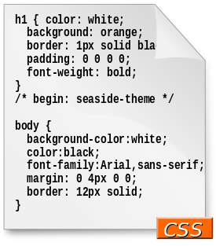

Cascading Style Sheets
|  | |
| Filename extension | .css |
|---|---|
| Internet media type | text/css |
| Developed by | |
| Initial release | December 17, 1996 |
| Type of format | Style sheet language |
| Standards | |
{kind=link}
| Cascading Style Sheets |
|---|
| Comparisons |
| Web design |
| HTML | |||
|---|---|---|---|
| Comparisons | |||
|
|||
Cascading Style Sheets (CSS) is a style sheet language used for describing the presentation of a document written in a markup language.[1] Although most often used to set the visual style of web pages and user interfaces written in HTML and XHTML, the language can be applied to any XML document, including plain XML, SVG and XUL, and is applicable to rendering in speech, or on other media. Along with HTML and JavaScript, CSS is a cornerstone technology used by most websites to create visually engaging webpages, user interfaces for web applications, and user interfaces for many mobile applications.[2]
CSS is designed primarily to enable the separation of document content from document presentation, including aspects such as the layout, colors, and fonts.[3] This separation can improve content accessibility, provide more flexibility and control in the specification of presentation characteristics, enable multiple HTML pages to share formatting by specifying the relevant CSS in a separate .css file, and reduce complexity and repetition in the structural content.
This separation of formatting and content makes it possible to present the same markup page in different styles for different rendering methods, such as on-screen, in print, by voice (when read out by a speech-based browser or screen reader) and on Braille-based, tactile devices. It can also be used to display the web page differently depending on the screen size or device on which it is being viewed. Readers can also specify a different style sheet, such as a CSS file stored on their own computer, to override the one the author has specified.
Changes to the graphic design of a document (or hundreds of documents) can be applied quickly and easily, by editing a few lines in the CSS file they use, rather than by changing markup in the documents.
The CSS specification describes a priority scheme to determine which style rules apply if more than one rule matches against a particular element. In this so-called cascade, priorities (or weights) are calculated and assigned to rules, so that the results are predictable.
The CSS specifications are maintained by the World Wide Web Consortium (W3C). Internet media type (MIME type) text/css is registered for use with CSS by RFC 2318 (March 1998). The W3C operates a free CSS validation service for CSS documents.[4]
Contents
[hide]Syntax[edit]
CSS has a simple syntax and uses a number of English keywords to specify the names of various style properties.
A style sheet consists of a list of rules. Each rule or rule-set consists of one or more selectors, and a declaration block.
Selector[edit]
In CSS, selectors are used to declare which part of the markup a style applies to by matching tags and attributes in the markup itself.
Selectors may apply to:
- all elements of a specific type, e.g. the second-level headers h2
- elements specified by attribute, in particular:
- id: an identifier unique within the document
- class: an identifier that can annotate multiple elements in a document
- elements depending on how they are placed relative to others in the document tree.
Classes and IDs are case-sensitive, start with letters, and can include alphanumeric characters and underscores. A class may apply to any number of instances of any elements. An ID may only be applied to a single element.
Pseudo-classes are used in CSS selectors to permit formatting
based on information that is not contained in the document tree. One
example of a widely used pseudo-class is :hover,
which identifies content only when the user "points to" the visible
element, usually by holding the mouse cursor over it. It is appended to a
selector as in a:hover or #elementid:hover. A pseudo-class classifies document elements, such as :link or :visited, whereas a pseudo-element makes a selection that may consist of partial elements, such as ::first-line or ::first-letter.[5]
Selectors may be combined in many ways to achieve great specificity and flexibility.[6]
Multiple selectors may be joined in a spaced list to specify elements
by location, element type, id, class, or any combination thereof. The
order of the selectors is important. For example, div .myClass {color: red;} applies to all elements of class myClass that are inside div elements, whereas .myClass div {color: red;} applies to all div elements that are in elements of class myClass.
The following table provides a summary of selector syntax indicating usage and the version of CSS in which it was introduced.[7]
| Pattern | Matches | CSS level in which first defined |
|---|---|---|
| E | an element of type E | 1 |
| E:link | an E element being the source anchor of a hyperlink of which the target is not yet visited (:link) or already visited (:visited) | 1 |
| E:active | an E element during certain user actions | 1 |
| E::first-line | the first formatted line of an E element | 1 |
| E::first-letter | the first formatted letter of an E element | 1 |
| .c | all elements with class="c" | 1 |
| #myid | the element with id="myid" | 1 |
| E.warning | an E element whose class is "warning" (the document language specifies how class is determined) | 1 |
| E#myid | an E element with ID equal to "myid" | 1 |
| E F | an F element descendant of an E element | 1 |
| * | any element | 2 |
| E[foo] | an E element with a "foo" attribute | 2 |
| E[foo="bar"] | an E element whose "foo" attribute value is exactly equal to "bar" | 2 |
| E[foo~="bar"] | an E element whose "foo" attribute value is a list of whitespace-separated values, one of which is exactly equal to "bar" | 2 |
| E[foo|="en"] | an E element whose "foo" attribute has a hyphen-separated list of values beginning (from the left) with "en" | 2 |
| E:first-child | an E element, first child of its parent | 2 |
| E:lang(fr) | an element of type E in language "fr" (the document language specifies how language is determined) | 2 |
| E::before | generated content before an E element's content | 2 |
| E::after | generated content after an E element's content | 2 |
| E > F | an F element child of an E element | 2 |
| E + F | an F element immediately preceded by an E element | 2 |
| E[foo^="bar"] | an E element whose "foo" attribute value begins exactly with the string "bar" | 3 |
| E[foo$="bar"] | an E element whose "foo" attribute value ends exactly with the string "bar" | 3 |
| E[foo*="bar"] | an E element whose "foo" attribute value contains the substring "bar" | 3 |
| E:root | an E element, root of the document | 3 |
| E:nth-child(n) | an E element, the n-th child of its parent | 3 |
| E:nth-last-child(n) | an E element, the n-th child of its parent, counting from the last one | 3 |
| E:nth-of-type(n) | an E element, the n-th sibling of its type | 3 |
| E:nth-last-of-type(n) | an E element, the n-th sibling of its type, counting from the last one | 3 |
| E:last-child | an E element, last child of its parent | 3 |
| E:first-of-type | an E element, first sibling of its type | 3 |
| E:last-of-type | an E element, last sibling of its type | 3 |
| E:only-child | an E element, only child of its parent | 3 |
| E:only-of-type | an E element, only sibling of its type | 3 |
| E:empty | an E element that has no children (including text nodes) | 3 |
| E:target | an E element being the target of the referring URI | 3 |
| E:enabled | a user interface element E that is enabled | 3 |
| E:disabled | a user interface element E that is disabled | 3 |
| E:checked | a user interface element E that is checked (for instance a radio-button or checkbox) | 3 |
| E:not(s) | an E element that does not match simple selector s | 3 |
| E ~ F | an F element preceded by an E element | 3 |
Declaration block[edit]
A declaration block consists of a list of declarations in braces. Each declaration itself consists of a property, a colon (:), and a value. If there are multiple declarations in a block, a semi-colon (;) must be inserted to separate each declaration.[8]
Properties are specified in the CSS standard. Each property has a set of possible values. Some properties can affect any type of element, and others apply only to particular groups of elements.[9]
Values may be keywords, such as "center" or "inherit", or numerical
values, such as 200px (200 pixels), 50vw (50 percent of the viewport
width) or 80% (80 percent of the window width). Color values can be
specified with keywords (e.g. "red"), hexadecimal values (e.g. #FF0000,
also abbreviated as #F00), RGB values on a 0 to 255 scale (e.g. rgb(255, 0, 0)), RGBA values that specify both color and opacity (e.g. rgba(255, 0, 0, 0.8)), or HSL or HSLA values (e.g. hsl(000, 100%, 50%), hsla(000, 100%, 50%, 80%)).[10]
Use[edit]
Before CSS, nearly all of the presentational attributes of HTML documents were contained within the HTML markup; all font colors, background styles, element alignments, borders and sizes had to be explicitly described, often repeatedly, within the HTML. CSS allows authors to move much of that information to another file, the style sheet, resulting in considerably simpler HTML.
For example, headings (h1 elements), sub-headings (h2), sub-sub-headings (h3), etc., are defined structurally using HTML. In print and on the screen, choice of font, size, color and emphasis for these elements is presentational.
Before CSS, document authors who wanted to assign such typographic characteristics to, say, all h2
headings had to repeat HTML presentational markup for each occurrence
of that heading type. This made documents more complex, larger, and more
error-prone and difficult to maintain. CSS allows the separation of
presentation from structure. CSS can define color, font, text alignment,
size, borders, spacing, layout and many other typographic
characteristics, and can do so independently for on-screen and printed
views. CSS also defines non-visual styles such as the speed and emphasis
with which text is read out by aural text readers. The W3C has now deprecated the use of all presentational HTML markup.[11]
For example, under pre-CSS HTML, a heading element defined with red text would be written as:
<h1><font color="red"> Chapter 1. </font></h1>
Using CSS, the same element can be coded using style properties instead of HTML presentational attributes:
<h1 style="color: red;"> Chapter 1. </h1>
An "external" CSS file, as described below, can be associated with an HTML document using the following syntax:
<link href="path/to/file.css" rel="stylesheet">
An internal CSS code can be typed in the head section of the code. The coding is started with the style tag. For example,
<style>
Sources[edit]
CSS information can be provided from various sources. These sources can be the web browser, the user and the author. The information from the author can be further classified into inline, media type, importance, selector specificity, rule order, inheritance and property definition. CSS style information can be in a separate document or it can be embedded into an HTML document. Multiple style sheets can be imported. Different styles can be applied depending on the output device being used; for example, the screen version can be quite different from the printed version, so that authors can tailor the presentation appropriately for each medium.
The style sheet with the highest priority controls the content display. Declarations not set in the highest priority source are passed on to a source of lower priority, such as the user agent style. This process is called cascading.
One of the goals of CSS is to allow users greater control over presentation. Someone who finds red italic headings difficult to read may apply a different style sheet. Depending on the browser and the web site, a user may choose from various style sheets provided by the designers, or may remove all added styles and view the site using the browser's default styling, or may override just the red italic heading style without altering other attributes.
| Priority | CSS Source Type | Description |
|---|---|---|
| 1 | Importance | The ‘!important’ annotation overwrites the previous priority types |
| 2 | Inline | A style applied to an HTML element via HTML ‘style’ attribute |
| 3 | Media Type | A property definition applies to all media types, unless a media specific CSS defined |
| 4 | User defined | Most browsers have the accessibility feature: a user defined CSS |
| 5 | Selector specificity | A specific contextual selector (#heading p) overwrites generic definition |
| 6 | Rule order | Last rule declaration has a higher priority |
| 7 | Parent inheritance | If a property is not specified, it is inherited from a parent element |
| 8 | CSS property definition in HTML document | CSS rule or CSS inline style overwrites a default browser value |
| 9 | Browser default | The lowest priority: browser default value is determined by W3C initial value specifications |
Specificity[edit]
Specificity refers to the relative weights of various rules.[12] It determines which styles are applied to an element when more than one rule could apply. Based on specification, a simple selector (e.g. H1) has a specificity of 1, class selectors have a specificity of 1,0, and ID selectors a specificity of 1,0,0. Because the specificity values do not carry over as in the decimal system, commas are used to separate the "digits"[13] (a CSS rule having 11 elements and 11 classes would have a specificity of 11,11, not 121).
Thus the following rules selectors result in the indicated specificity:
| Selectors | Specificity |
|---|---|
| H1 {color: white;} | 1 |
| P EM {color: green;} | 2 |
| .grape {color: red;} | 1,0 |
| P.bright {color: blue;} | 1,1 |
| P.bright EM.dark {color: yellow;} | 2,2 |
| #id218 {color: brown;} | 1,0,0 |
| style=" " | 1,0,0,0 |
Example[edit]
Consider this HTML fragment:
<!DOCTYPE html>
<html>
<head>
<meta charset="utf-8">
<style>
#xyz { color: red; }
</style>
</head>
<body>
<p id="xyz" style="color: blue;"> To demonstrate specificity </p>
</body>
</html>
In the above example, the declaration in the "style" attribute will override the one in the style element because it has a higher specificity.
Inheritance[edit]
Inheritance is a key feature in CSS; it relies on the ancestor-descendant relationship to operate. Inheritance is the mechanism by which properties are applied not only to a specified element, but also to its descendants.[12] Inheritance relies on the document tree, which is the hierarchy of XHTML elements in a page based on nesting. Descendant elements may inherit CSS property values from any ancestor element enclosing them. In general, descendant elements inherit text-related properties, but box-related properties are not inherited. Properties that can be inherited are color, font, letter-spacing, line-height, list-style, text-align, text-indent, text-transform, visibility, white-space and word-spacing. Properties that cannot be inherited are background, border, display, float and clear, height, and width, margin, min- and max-height and -width, outline, overflow, padding, position, text-decoration, vertical-align and z-index.
Inheritance prevents certain properties from being declared over and over again in a style sheet, allowing the software developers to write less CSS. It enhances faster-loading of web pages by users and enables the clients to save money on bandwidth and development costs.
Example[edit]
Given the following style sheet:
h1 {
color: pink;
}
Suppose there is an h1 element with an emphasizing element (em) inside:
<h1>
This to <em>illustrate</em> inheritance
</h1>
If no color has been assigned to the em element, the emphasized word "illustrate" will inherit the color of the parent element, h1. The style sheet h1 has the color pink, hence, the em element will likewise be in pink.
Whitespace[edit]
Whitespace between properties and selectors is ignored. This code snippet:
body{overflow:hidden;background:#000000;}
is functionally equivalent to this one:
body {
overflow: hidden;
background: #000000;
}
One common way to format CSS for readability is to indent each property and give it its own line.
Positioning[edit]
CSS 2.1 defines three positioning schemes:
- Normal flow
- Inline items are laid out in the same way as the letters in words in text, one after the other across the available space until there is no more room, then starting a new line below. Block items stack vertically, like paragraphs and like the items in a bulleted list. Normal flow also includes relative positioning of block or inline items, and run-in boxes.
- Floats
- A floated item is taken out of the normal flow and shifted to the left or right as far as possible in the space available. Other content then flows alongside the floated item.
- Absolute positioning
- An absolutely positioned item has no place in, and no effect on, the normal flow of other items. It occupies its assigned position in its container independently of other items.[14]
Position property[edit]
There are four possible values of the position property. If an item is positioned in any way other than static, then the further properties top, bottom, left, and right are used to specify offsets and positions.
- Static
- The default value places the item in the normal flow
- Relative
- The item is placed in the normal flow, and then shifted or offset from that position. Subsequent flow items are laid out as if the item had not been moved.
- Absolute
- Specifies absolute positioning. The element is positioned in relation to its nearest non-static ancestor.
- Fixed
- The item is absolutely positioned in a fixed position on the screen even as the rest of the document is scrolled[14]
Float and clear[edit]
The float property may have one of three values. Absolutely positioned or fixed items cannot be floated. Other elements normally flow around floated items, unless they are prevented from doing so by their clear property.
- left
- The item floats to the left of the line that it would have appeared in; other items may flow around its right side.
- right
- The item floats to the right of the line that it would have appeared in; other items may flow around its left side.
- clear
- Forces the element to appear underneath ('clear') floated elements to the left (
clear:left), right (clear:right) or both sides (clear:both).[14][15]
History[edit]
{kind=link}
CSS was first proposed by Håkon Wium Lie on October 10, 1994.[16] At the time, Lie was working with Tim Berners-Lee at CERN.[17] Several other style sheet languages for the web were proposed around the same time, and discussions on public mailing lists and inside World Wide Web Consortium resulted in the first W3C CSS Recommendation (CSS1)[18] being released in 1996. In particular, Bert Bos' proposal was influential; he became co-author of CSS1 and is regarded as co-creator of CSS.[19]
Style sheets have existed in one form or another since the beginnings of Standard Generalized Markup Language (SGML) in the 1980s, and CSS was developed to provide style sheets for the web.[20] One requirement for a web style sheet language was for style sheets to come from different sources on the web. Therefore, existing style sheet languages like DSSSL and FOSI were not suitable. CSS, on the other hand, allowed a document's style to be influenced by multiple style sheets by way of "cascading".[20]
As HTML grew, it came to encompass a wider variety of stylistic capabilities to meet the demands of web developers. This evolution gave the designer more control over site appearance, at the cost of more complex HTML. Variations in web browser implementations, such as ViolaWWW and WorldWideWeb,[21] made consistent site appearance difficult, and users had less control over how web content was displayed. The browser/editor developed by Tim Berners-Lee had style sheets that were hard-coded into the program. The style sheets could therefore not be linked to documents on the web.[22] Robert Cailliau, also of CERN, wanted to separate the structure from the presentation so that different style sheets could describe different presentation for printing, screen-based presentations, and editors.[21]
Improving web presentation capabilities was a topic of interest to many in the web community and nine different style sheet languages were proposed on the www-style mailing list.[20] Of these nine proposals, two were especially influential on what became CSS: Cascading HTML Style Sheets[16] and Stream-based Style Sheet Proposal (SSP).[19][23] Two browsers served as testbeds for the initial proposals; Lie worked with Yves Lafon to implement CSS in Dave Raggett's Arena browser.[24][25][26] Bert Bos implemented his own SSP proposal in the Argo browser.[19] Thereafter, Lie and Bos worked together to develop the CSS standard (the 'H' was removed from the name because these style sheets could also be applied to other markup languages besides HTML).[17]
Lie's proposal was presented at the "Mosaic and the Web" conference (later called WWW2) in Chicago, Illinois in 1994, and again with Bert Bos in 1995.[17] Around this time the W3C was already being established, and took an interest in the development of CSS. It organized a workshop toward that end chaired by Steven Pemberton. This resulted in W3C adding work on CSS to the deliverables of the HTML editorial review board (ERB). Lie and Bos were the primary technical staff on this aspect of the project, with additional members, including Thomas Reardon of Microsoft, participating as well. In August 1996 Netscape Communication Corporation presented an alternative style sheet language called JavaScript Style Sheets (JSSS).[17] The spec was never finished and is deprecated.[27] By the end of 1996, CSS was ready to become official, and the CSS level 1 Recommendation was published in December.
Development of HTML, CSS, and the DOM had all been taking place in one group, the HTML Editorial Review Board (ERB). Early in 1997, the ERB was split into three working groups: HTML Working group, chaired by Dan Connolly of W3C; DOM Working group, chaired by Lauren Wood of SoftQuad; and CSS Working group, chaired by Chris Lilley of W3C.
The CSS Working Group began tackling issues that had not been addressed with CSS level 1, resulting in the creation of CSS level 2 on November 4, 1997. It was published as a W3C Recommendation on May 12, 1998. CSS level 3, which was started in 1998, is still under development as of 2014.
In 2005 the CSS Working Groups decided to enforce the requirements for standards more strictly. This meant that already published standards like CSS 2.1, CSS 3 Selectors and CSS 3 Text were pulled back from Candidate Recommendation to Working Draft level.
Difficulty with adoption[edit]
The CSS 1 specification was completed in 1996. Microsoft's Internet Explorer 3[17] was released in that year, featuring some limited support for CSS. IE 4 and Netscape 4.x added more support, but it was typically incomplete and had many bugs that prevented CSS from being usefully adopted. It was more than three years before any web browser achieved near-full implementation of the specification. Internet Explorer 5.0 for the Macintosh, shipped in March 2000, was the first browser to have full (better than 99 percent) CSS 1 support,[28] surpassing Opera, which had been the leader since its introduction of CSS support 15 months earlier. Other browsers followed soon afterwards, and many of them additionally implemented parts of CSS 2.
However, even when later 'version 5' browsers began to offer a fairly full implementation of CSS, they were still incorrect in certain areas and were fraught with inconsistencies, bugs and other quirks. The inconsistencies and variation in feature support made it difficult for designers to achieve a consistent appearance across browsers and platforms, leading to the use of workarounds such as CSS hacks and filters.
Problems with browsers' patchy adoption of CSS, along with errata in the original specification, led the W3C to revise the CSS 2 standard into CSS 2.1, which moved nearer to a working snapshot of current CSS support in HTML browsers. Some CSS 2 properties that no browser successfully implemented were dropped, and in a few cases, defined behaviors were changed to bring the standard into line with the predominant existing implementations. CSS 2.1 became a Candidate Recommendation on February 25, 2004, but CSS 2.1 was pulled back to Working Draft status on June 13, 2005,[29] and only returned to Candidate Recommendation status on July 19, 2007.[30]
In addition to these problems, the .css extension was used by a software product used to convert PowerPoint files into Compact Slide Show files,[31] so some web servers served all .css[32] as mime type application/x-pointplus[33] rather than text/css.
Variations[edit]
CSS has various levels and profiles. Each level of CSS builds upon the last, typically adding new features and typically denoted as CSS 1, CSS 2, CSS 3, and CSS 4. Profiles are typically a subset of one or more levels of CSS built for a particular device or user interface. Currently there are profiles for mobile devices, printers, and television sets. Profiles should not be confused with media types, which were added in CSS 2.
CSS 1[edit]
The first CSS specification to become an official W3C Recommendation is CSS level 1, published on December 17, 1996. Håkon Wium Lie and Bert Bos are credited as the original developers.[34][35] Among its capabilities are support for
- Font properties such as typeface and emphasis
- Color of text, backgrounds, and other elements
- Text attributes such as spacing between words, letters, and lines of text
- Alignment of text, images, tables and other elements
- Margin, border, padding, and positioning for most elements
- Unique identification and generic classification of groups of attributes
The W3C no longer maintains the CSS 1 Recommendation.[36]
CSS 2[edit]
CSS level 2 specification was developed by the W3C and published as a recommendation in May 1998. A superset of CSS 1, CSS 2 includes a number of new capabilities like absolute, relative, and fixed positioning of elements and z-index, the concept of media types, support for aural style sheets (which were later replaced by the CSS 3 speech modules)[37] and bidirectional text, and new font properties such as shadows.
The W3C no longer maintains the CSS 2 recommendation.[38]
CSS 2.1[edit]
CSS level 2 revision 1, often referred to as "CSS 2.1", fixes errors in CSS 2, removes poorly supported or not fully interoperable features and adds already implemented browser extensions to the specification. To comply with the W3C Process for standardizing technical specifications, CSS 2.1 went back and forth between Working Draft status and Candidate Recommendation status for many years. CSS 2.1 first became a Candidate Recommendation on February 25, 2004, but it was reverted to a Working Draft on June 13, 2005 for further review. It returned to Candidate Recommendation on 19 July 2007 and then updated twice in 2009. However, because changes and clarifications were made, it again went back to Last Call Working Draft on 7 December 2010.
CSS 2.1 went to Proposed Recommendation on 12 April 2011.[39] After being reviewed by the W3C Advisory Committee, it was finally published as a W3C Recommendation on 7 June 2011.[40]
CSS 3[edit]
{kind=link}
Unlike CSS 2, which is a large single specification defining various features, CSS 3 is divided into several separate documents called "modules". Each module adds new capabilities or extends features defined in CSS 2, preserving backward compatibility. Work on CSS level 3 started around the time of publication of the original CSS 2 recommendation. The earliest CSS 3 drafts were published in June 1999.[41]
Due to the modularization, different modules have different stability and statuses.[42] As of June 2012, there are over fifty CSS modules published from the CSS Working Group.,[41] and four of these have been published as formal recommendations:
- 2012-06-19: Media Queries
- 2011-09-29: Namespaces
- 2011-09-29: Selectors Level 3
- 2011-06-07: Color
Some modules have Candidate Recommendation (CR) status and are considered moderately stable. At CR stage, implementations are advised to drop vendor prefixes.[43]
| Module | Specification title | Status | date |
|---|---|---|---|
| css3-background | CSS Backgrounds and Borders Module Level 3 | Candidate Rec. | Sep'2014 |
| css3-box | CSS basic box model | Working Draft, | Aug'2007 |
| css-cascade-3 | CSS Cascading and Inheritance Level 3 | Candidate Rec. | Oct'2013 |
| css3-color | CSS Color Module Level 3 | Recommendation | Jun'2011 |
| css3-content | CSS3 Generated and Replaced Content Module | Working Draft | May'2003 |
| css-fonts-3 | CSS Fonts Module Level 3 | Candidate Rec. | Oct'2013 |
| css3-gcpm | CSS Generated Content for Paged Media Module | Working Draft | May'2014 |
| css3-layout | CSS Template Layout Module | Working Draft | Nov'2011 |
| css3-mediaqueries | Media Queries | Recommendation | Jun'2012 |
| css3-multicol | Multi-column Layout | Candidate Rec. | Apr'2011 |
| css3-page | CSS Paged Media Module Level 3 | Working Draft | March 2013 |
| css3-selectors | Selectors Level 3 | Recommendation | Sep'2011 |
| css3-ui | CSS Basic User Interface Module Level 3 (CSS3 UI) | Working Draft | Jan'2012 |
CSS 4[edit]
There is no single, integrated CSS4 specification,[45] because it is split into separate modules. However, there are "level 4" modules.[46]
Because CSS3 split the CSS language's definition into modules, the modules have been allowed to level independently. Most modules are level 3—they build on things from CSS 2.1. A few level-4 modules exist (such as Image Values, Backgrounds & Borders, or Selectors), which build on the functionality of a preceding level-3 module. Other modules defining entirely new functionality, such as Flexbox, have been designated as "level 1".[47]
So, although no monolithic CSS4 is currently planned to be worked on after CSS3 is finished completely, the level 4 modules can collectively be referred to as CSS4.[citation needed]
Browser support[edit]
Because not all browsers correctly parse CSS code, developed coding techniques known as CSS hacks can either filter specific browsers or target specific browsers (generally both are known as CSS filters). The former can be defined as CSS filtering hacks and the latter can be defined as CSS targeting hacks. Both can be used to hide or show parts of the CSS to different browsers. This is achieved either by exploiting CSS-handling quirks or bugs in the browser, or by taking advantage of lack of support for parts of the CSS specifications. Using CSS filters, some designers have gone as far as delivering different CSS to certain browsers to ensure designs render as expected. Because very early web browsers were either completely incapable of handling CSS, or rendered CSS very poorly, designers today often routinely use CSS filters that completely prevent these browsers from accessing any of the CSS. Internet Explorer was the first browser to provide support for CSS, with IE 3.0, and increased progressively with each version.[48] By 2008, the first Beta of Internet Explorer 8 offered support for CSS 2.1 in its best web standards mode.
An example of a historically well-known CSS browser bug was the Internet Explorer box model bug, where box widths are interpreted incorrectly in several versions of the browser, resulting in blocks that are too narrow when viewed in Internet Explorer, but correct in standards-compliant browsers. The bug can be avoided in Internet Explorer 6 by using the correct doctype in (X)HTML documents. CSS hacks and CSS filters are used to compensate for bugs such as this, just one of hundreds of CSS bugs that have been documented in various versions of Netscape, Mozilla Firefox, Opera, and Internet Explorer (including Internet Explorer 7).[49]
Even when the availability of CSS-capable browsers made CSS a viable technology, the adoption of CSS was still held back by designers' struggles with browsers' incorrect CSS implementation and patchy CSS support. Even today, these problems continue to make the business of CSS design more complex and costly than it was intended to be, and cross-browser testing remains a necessity. Other reasons for the continuing non-adoption of CSS are: its perceived complexity, authors' lack of familiarity with CSS syntax and required techniques, poor support from authoring tools, the risks posed by inconsistency between browsers and the increased costs of testing.[citation needed][dated info]
Currently[when?] there is strong competition between the WebKit layout engine used in Apple Safari and Google Chrome, the similar KHTML engine used in KDE's Konqueror browser and Mozilla's Gecko layout engine used in Firefox — each of them is leading in different aspects of CSS.[clarification needed examples would be useful] As of August 2009, Internet Explorer 8, Firefox 2 and 3 have reasonably complete levels of implementation of CSS 2.1.[50][needs update]
Limitations[edit]
Some noted limitations of the current capabilities of CSS include:
- Selectors are unable to ascend
- CSS currently offers no way to select a parent or ancestor of an element that satisfies certain criteria.[51] CSS Selectors Level 4, which is still in Working Draft status, proposes such a selector,[52] but only as part of the "complete" selector profile, not the "fast" profile used in dynamic CSS styling.[53] A more advanced selector scheme (such as XPath) would enable more sophisticated style sheets. The major reasons for the CSS Working Group previously rejecting proposals for parent selectors are related to browser performance and incremental rendering issues.[54]
- Cannot explicitly declare new scope independently of position
- Scoping rules for properties such as z-index look for the closest parent element with a position:absolute or position:relative attribute. This odd coupling has undesired effects. For example, it is impossible to avoid declaring a new scope when one is forced to adjust an element's position, preventing one from using the desired scope of a parent element.
- Pseudo-class dynamic behavior not controllable
- CSS implements pseudo-classes that allow a degree of user feedback
by conditional application of alternate styles. One CSS pseudo-class, "
:hover", is dynamic (equivalent of JavaScript "onmouseover") and has potential for abuse (e.g., implementing cursor-proximity popups),[55] but CSS has no ability for a client to disable it (no "disable"-like property) or limit its effects (no "nochange"-like values for each property). - Cannot name rules
- There is no way to name a CSS rule, which would allow (for example) client-side scripts to refer to the rule even if its selector changes.
- Cannot include styles from a rule into another rule
- CSS styles often must be duplicated in several rules to achieve a desired effect, causing additional maintenance and requiring more thorough testing. Some new CSS features were proposed to solve this, but (as of February, 2016) are not yet implemented anywhere.[56]
- Cannot target specific text without altering markup
- Besides the
:first-letterpseudo-element, one cannot target specific ranges of text without needing to utilize place-holder elements.
Resolved Limitations[edit]
- Vertical control limitations
- Although horizontal placement of elements was always generally easy to control, vertical placement was frequently unintuitive, convoluted, or outright impossible. Simple tasks, such as centering an element vertically or getting a footer to be placed no higher than bottom of viewport, either required complicated and unintuitive style rules, or simple but widely unsupported rules.[51] The Flexible Box Module improved the situation considerably and vertical control is much more straightforward and supported in all of the modern browsers.[57] Older browsers still have those issues, but most of those (mainly Internet Explorer 9 and below) are no longer supported by their vendors.[58]
- Absence of expressions
- There was no standard ability to specify property values as simple expressions (such as
margin-left: 10% – 3em + 4px;). This would be useful in a variety of cases, such as calculating the size of columns subject to a constraint on the sum of all columns. Internet Explorer versions 5 to 7 support a proprietary expression() statement,[59] with similar functionality. This proprietary expression() statement is no longer supported from Internet Explorer 8 onwards, except in compatibility modes. This decision was taken for "standards compliance, browser performance, and security reasons".[59] However, a candidate recommendation with a calc() value to address this limitation has been published by the CSS WG[60] and has since been supported in all of the modern browsers.[61] - Lack of column declaration
- Although possible in current CSS 3 (using the
column-countmodule),[62] layouts with multiple columns can be complex to implement in CSS 2.1. With CSS 2.1, the process is often done using floating elements, which are often rendered differently by different browsers, different computer screen shapes, and different screen ratios set on standard monitors. All of the modern browsers support this CSS 3 feature in one form or another.[63]
Advantages[edit]
- Separation of content from presentation
- CSS facilitates publication of content in multiple presentation formats based on nominal parameters. Nominal parameters include explicit user preferences, different web browsers, the type of device being used to view the content (a desktop computer or mobile Internet device), the geographic location of the user and many other variables.
- Site-wide consistency
-
Main articles: Separation of presentation and content and Style sheet (web development)When CSS is used effectively, in terms of inheritance and "cascading", a global style sheet can be used to affect and style elements site-wide. If the situation arises that the styling of the elements should need to be changed or adjusted, these changes can be made by editing rules in the global style sheet. Before CSS, this sort of maintenance was more difficult, expensive and time-consuming.
- Bandwidth
- A stylesheet, internal or external, specifies the style once for a range of HTML elements selected by
class, type or relationship to others. This is much more efficient than repeating style information inline for each occurrence of the element. An external stylesheet is usually stored in the browser cache, and can therefore be used on multiple pages without being reloaded, further reducing data transfer over a network. - Page reformatting
-
Main article: Progressive enhancementWith a simple change of one line, a different style sheet can be used for the same page. This has advantages for accessibility, as well as providing the ability to tailor a page or site to different target devices. Furthermore, devices not able to understand the styling still display the content.
- Accessibility
- Without CSS, web designers must typically lay out their pages with techniques such as HTML tables that hinder accessibility for vision-impaired users (see Tableless web design#Accessibility).
CSS frameworks[edit]
CSS frameworks are pre-prepared libraries that are meant to allow for easier, more standards-compliant styling of web pages using the Cascading Style Sheets language. CSS frameworks include Foundation, Blueprint, Bootstrap, Cascade Framework
and Materialize. Like programming and scripting language libraries, CSS
frameworks are usually incorporated as external .css sheets referenced
in the HTML <head>.
They provide a number of ready-made options for designing and laying
out the web page. Although many of these frameworks have been published,
some authors use them mostly for rapid prototyping, or for learning
from, and prefer to 'handcraft' CSS that is appropriate to each
published site without the design, maintenance and download overhead of
having many unused features in the site's styling.[64]
CSS Authoring Methodologies[edit]
As the size of CSS resources used in a project increases, the development team needs to decide on a common methodology to keep them organized. The goals are ease of development, ease of collaboration during development and performance of the deployed stylesheets in the browser. Popular methodologies include OOCSS - Object Oriented CSS, ACSS - Atomic CSS, oCSS - organic Cascade Style Sheet, SMACSS - Scalable and Modular Architecture for CSS and BEM - Block, Element, Modifier.[65]
See also[edit]
References[edit]
- Jump up ^ "CSS developer guide". Mozilla Developer Network. Retrieved 2015-09-24.
- Jump up ^ "Web-based Mobile Apps of the Future Using HTML 5, CSS and JavaScript". HTMLGoodies. Retrieved October 2014.
- Jump up ^ "What is CSS?". World Wide Web Consortium. Retrieved December 2010.
- Jump up ^ "W3C CSS validation service".
- Jump up ^ "W3C CSS2.1 specification for pseudo-elements and pseudo-classes". World Wide Web Consortium. 7 June 2011. Retrieved 30 April 2012.
- Jump up ^ see the complete definition of selectors at the W3C Web site.
- Jump up ^ "Selectors Level 3". W3.org. Retrieved 2014-05-30.
- Jump up ^ "W3C CSS2.1 specification for rule sets, declaration blocks, and selectors". World Wide Web Consortium. 7 June 2011. Retrieved 2009-06-20.
- Jump up ^ "Full property table". W3.org. Retrieved 2014-05-30.
- Jump up ^ animation-name (2014-04-30). "CSS Legal Color Values". W3schools.com. Retrieved 2014-05-30.
- Jump up ^ "HTML 5. A vocabulary and associated APIs for HTML and XHTML". World Wide Web Consortium. Retrieved 28 June 2014.
|first1=missing|last1=in Authors list (help) - ^ Jump up to: a b Meyer, Eric A. (2006). Cascading Style Sheets: The Definitive Guide (3rd ed.). O'Reilly Media, Inc. ISBN 0-596-52733-0.
- Jump up ^ Assigning property values, Cascading, and Inheritance
- ^ Jump up to: a b c Bos, Bert; et al. (7 December 2010). "9.3 Positioning schemes". Cascading Style Sheets Level 2 Revision 1 (CSS 2.1) Specification. W3C. Retrieved 16 February 2011.
- Jump up ^ Holzschlag, Molly E (2005). Spring into HTML and CSS. Pearson Education, Inc. ISBN 0-13-185586-7.
- ^ Jump up to: a b Lie, Hakon W (10 Oct 1994). "Cascading HTML style sheets - a proposal" (Proposal) (0.92). CERN. Retrieved 25 May 2014.
- ^ Jump up to: a b c d e Lie, Håkon Wium; Bos, Bert (1999). Cascading Style Sheets, designing for the Web. Addison Wesley. ISBN 0-201-59625-3. Retrieved 23 June 2010.
- Jump up ^ "Cascading Style Sheets, level 1". World Wide Web Consortium.
- ^ Jump up to: a b c Bos, Bert (14 April 1995). "Simple style sheets for SGML & HTML on the web". World Wide Web Consortium. Retrieved 20 June 2010.
- ^ Jump up to: a b c "Cascading Style Sheets". University of Oslo. Retrieved 3 September 2014.
- ^ Jump up to: a b Petrie, Charles; Cailliau, Robert (November 1997). "Interview Robert Cailliau on the WWW Proposal: "How It Really Happened."". Institute of Electrical and Electronics Engineers. Retrieved 18 August 2010.
- Jump up ^ Bos, Håkon Wium Lie, Bert (1999). Cascading style sheets: designing for the Web (2nd ed.). Harlow, Essex, England: Addison-Wesley. ISBN 0-201-59625-3.
- Jump up ^ Bos, Bert (31 March 1995). "Stream-based Style sheet Proposal". Retrieved 3 September 2014.
- Jump up ^ Nielsen, Henrik Frystyk (7 June 2002). "Libwww Hackers". World Wide Web Consortium. Retrieved 6 June 2010.
- Jump up ^ "Yves Lafon". World Wide Web Consortium. Retrieved 17 June 2010.
- Jump up ^ "The W3C Team: Technology and Society". World Wide Web Consortium. 18 July 2008. Retrieved 22 January 2011.
- Jump up ^ Lou Montulli; Brendan Eich; Scott Furman; Donna Converse; Troy Chevalier (22 August 1996). "JavaScript-Based Style Sheets". World Wide Web Consortium. Retrieved 23 June 2010.
- Jump up ^ "CSS software". W3.org. Retrieved January 2011.
- Jump up ^ Anne van Kesteren. "CSS 2.1 – Anne’s Weblog". Retrieved 2011-02-16.
- Jump up ^ "Archive of W3C News in 2007". World Wide Web Consortium. Retrieved 2011-02-16.
- Jump up ^ Nitot, Tristan (18 March 2002). "Incorrect MIME Type for CSS Files". Mozilla Developer Center. Mozilla. Retrieved 20 June 2010.
- Jump up ^ McBride, Don (27 November 2009). "File Types". Retrieved 20 June 2010.
- Jump up ^ "css file extension details". File extension database. 12 March 2010. Retrieved 20 June 2010.
- Jump up ^ Bos, / Håkon Wium Lie, Bert (1997). Cascading style sheets: designing for the Web (1st print. ed.). Harlow, England ; Reading, MA.: Addison Wesley Longman. ISBN 0-201-41998-X.
- Jump up ^ W3C: Cascading Style Sheets, level 1 CSS 1 specification
- Jump up ^ W3C: Cascading Style Sheets level 1 specification CSS level 1 specification
- Jump up ^ http://www.w3.org/TR/CSS21/aural.html#aural-media-group
- Jump up ^ W3C: Cascading Style Sheets, level 2 CSS 2 specification (1998 recommendation)
- Jump up ^ W3C:Cascading Style Sheets, level 2 revision 1 CSS 2.1 specification (W3C Proposed Recommendation)
- Jump up ^ W3C:Cascading Style Sheets Standard Boasts Unprecedented Interoperability
- ^ Jump up to: a b Bos, Bert (18 February 2011). "Descriptions of all CSS specifications". World Wide Web Consortium. Retrieved 3 March 2011.
- Jump up ^ Bos, Bert (26 February 2011). "CSS current work". World Wide Web Consortium. Retrieved 3 March 2011.
- Jump up ^ Etemad, Elika (12 December 2010). "Cascading Style Sheets (CSS) Snapshot 2010". World Wide Web Consortium. Retrieved 3 March 2011.
- Jump up ^ "All CSS specifications". W3.org. 2014-05-22. Retrieved 2014-05-30.
- Jump up ^ Atkins Jr, Tab. "A Word About CSS4". Retrieved 18 October 2012.
- Jump up ^ "W3C CSS Selectors Level 4". W3.org. Retrieved 2014-05-30.
- Jump up ^ Flexbox
- Jump up ^ "CSS support in MS IE 3.0". W3C.
- Jump up ^ "CSS Compatibility in Internet Explorer". Microsoft. External link in
|publisher=(help) - Jump up ^ Hammond, David (2009). "Web browser standards support summary". Web Devout. Retrieved 2009-04-14.
- ^ Jump up to: a b Molly Holzschlag (January 2012). "Seven Things Still Missing from CSS". .net Magazine.
- Jump up ^ "Selectors Level 4 – Determining the Subject of a Selector". W3.org. Retrieved 2013-08-13.
- Jump up ^ "Selectors Level 4 – Fast vs Complete Selector Profiles". W3.org. Retrieved 2013-08-13.
- Jump up ^ Snook, Jonathan (October 2010). "Why we don't have a parent selector". snook.ca.
- Jump up ^ "Pure CSS Popups". meyerweb.com. Retrieved 2009-11-19.
- Jump up ^ Tab Atkins Jr. GitHub http://tabatkins.github.io/specs/css-apply-rule/. Retrieved 2016-02-27. Missing or empty
|title=(help) - Jump up ^ "Can I use... Support tables for HTML5, CSS3, etc.". CanIUse.com. Retrieved 2016-02-27.
- Jump up ^ "Internet Explorer End of Support". Microsoft. Retrieved 2016-02-27.
- ^ Jump up to: a b "About Dynamic Properties". Msdn.microsoft.com. Retrieved 2009-06-20.
- Jump up ^ "CSS3 Values and Units". W3.org. Retrieved 2009-06-20.
- Jump up ^ "Can I use... Support tables for HTML5, CSS3, etc.". CanIUse.com. Retrieved 2016-02-27.
- Jump up ^ "CSS Multi-column Layout Module". World Wide Web Consortium. Retrieved May 2011.
- Jump up ^ "Can I use... Support tables for HTML5, CSS3, etc.". CanIUse.com. Retrieved 2016-02-27.
- Jump up ^ Cederholm, Dan; Ethan Marcotte (2009). Handcrafted CSS: More Bulletproof Web Design. New Riders. p. 114. ISBN 978-0-321-64338-4. Retrieved 19 June 2010.
- Jump up ^ Antti, Hiljá. "OOCSS, ACSS, BEM, SMACSS: what are they? What should I use?". clubmate.fi. Hiljá. Retrieved 2 June 2015.
Further reading[edit]
|
|
This section is outdated. (July 2012) |
- Jeffrey Zeldman (2009): Designing With Web Standards, New Riders, ISBN 978-0321616951 (paperback) (book's companion site)
- Dan Cederholm (2009): Web Standards Solutions, The Markup and Style Handbook, Friends of Ed, ISBN 978-1430219200 (paperback) (Author's site)
- Meyer, Eric A. (2006). Cascading Style Sheets: The Definitive Guide, Third Edition. O'Reilly Media, Inc. ISBN 0-596-52733-0.
- More Eric Meyer On CSS (2004) ISBN 0-7357-1425-8
- Eric Meyer On CSS (2002), ISBN 0-7357-1245-X
- Meyer, Eric A. (2001) Cascading Style Sheets 2.0 Programmer's Reference, McGraw-Hill Osborne Media, ISBN 0-07-213178-0
- The Zen of CSS Design (2005) (co-authored by CSS Zen Garden Owner, Dave Shea, and Molly E. Holzschlag), ISBN 0-321-30347-4
- Kynn Bartlett: Teach Yourself CSS in 24 Hours, 2nd Edition (2006), Sams Publishing, ISBN 978-0672329067
- Cascading Style Sheets: Designing for the Web (2005) by Håkon Wium Lie and Bert Bos, ISBN 0-321-19312-1
- Cascading Style Sheets Cascading Style Sheets, PhD thesis, by Håkon Wium Lie – provides an authoritative historical reference of CSS
- Keith Schengili-Roberts (2003): Core CSS, 2nd Edition, Prentice Hall, ISBN 0-13-009278-9
- On the Analysis of Cascading Style Sheets, Pierre Geneves, Nabil Layaida, and Vincent Quint, Proceedings of the 21st International Conference on World Wide Web (WWW'12), pp. 809–818, 2012.
External links[edit]
| Wikibooks has a book on the topic of: Cascading Style Sheets |
| Wikimedia Commons has media related to Cascading Style Sheets. |
|
||
|
||
|
||
|